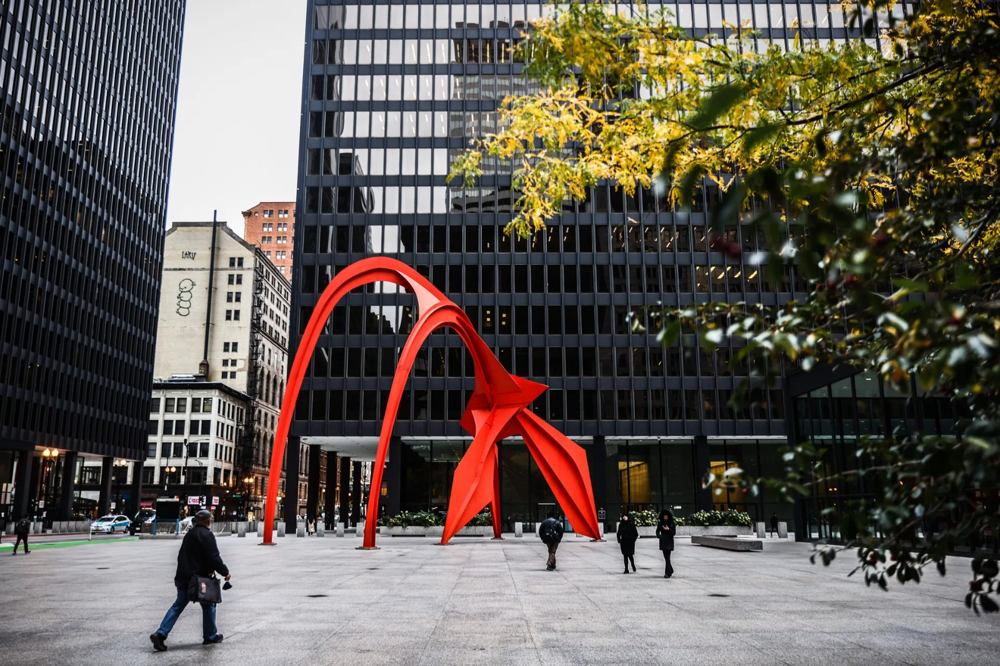
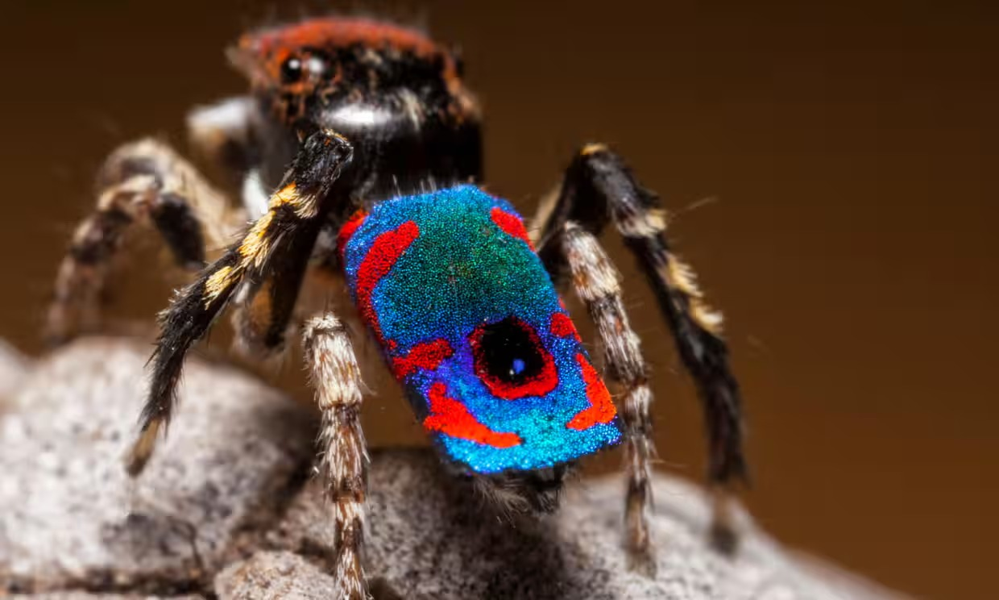

The GSA Plans to Sell Hundreds of Its Federal Government Buildings
By Leah Feiger | Feb 12, 2025 3:56 PM
The General Services Administration, staffed at its upper levels by Elon Musk associates, plans to sell 500-plus buildings—some of ...
Read MoreDonald Trump Bought a $90,000 Tesla With 37 Recall Notices Against It
By Jeremy White | Mar 12, 2025 12:45 PM
Here’s hoping Elon Musk won’t have to personally fix President Trump’s new EV anytime ...
Read MoreChelsea win Women’s League Cup final after own goal denies Manchester City
By Tom Garry | Sat 15 Mar 2025 14.30 GMT
It seems as though nothing can stop Sonia Bompastor in English football. Not a change of manager from Manchester City, not ...
Read MoreWhat are smartphones stealing from us? When mine was taken away, I found out.
Alexander Hurst | Mon 10 Mar 2025 07.00 GMT
A few Thursdays ago was a wrap. For my brief acting career, that is. One of the benefits of having a writer’s schedule in a city like Paris is the ability to...
Read More
Enough with unicorns and dinosaurs – show children the magic of real, living animals instead.
Isabel Losada | Thu 13 Mar 2025 10.00 GMT
Has it ever struck you as interesting the amount of dinosaur products that are marketed to boys and unicorn products to girls? I recently visited...
Read MoreWe can’t know if Vladimir Putin will accept a ceasefire in Ukraine. But this is what he’ll be thinking.
Orysia Lutsevych | Thu 13 Mar 2025 10.13 GMT
At this stage of the crisis, it is important to be clear-sighted. The US-Ukraine meeting in Jeddah was a damage-control operation. Both parties reset relations that had been damaged, largely ...
Read MoreAttacking a young tourist over her treatment of a wombat is hypocritical – and misses the point.
Georgie Purcell | Fri 14 Mar 2025 06.33 GMT
We’ve all seen the distressing footage of an American influencer taking a wombat joey away from its mother. The joey hisses and stirs, while the distraught mother circles the woman until she eventually drops it back to the side of the ...
Read More